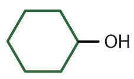

As noted in Chapter 4 "Covalent Bonding and Simple Molecular Compounds", an alcoholAn organic compound with an OH functional group on an aliphatic carbon atom. is an organic compound with a hydroxyl (OH) functional group on an aliphatic carbon atom. Because OH is the functional group of all alcohols, we often represent alcohols by the general formula ROH, where R is an alkyl group. (For more information about alkyl groups, see Chapter 12 "Organic Chemistry: Alkanes and Halogenated Hydrocarbons", Section 12.5 "IUPAC Nomenclature". Table 12.4 "Common Alkyl Groups" presents some common alkyl groups.)
Alcohols are common in nature. Most people are familiar with ethyl alcohol (ethanol), the active ingredient in alcoholic beverages, but this compound is only one of a family of organic compounds known as alcohols. The family also includes such familiar substances as cholesterol and the carbohydrates.
As we noted in Chapter 4 "Covalent Bonding and Simple Molecular Compounds", Section 4.6 "Introduction to Organic Chemistry", methanol (CH3OH) and ethanol (CH3CH2OH) are the first two members of the homologous series of alcohols.
Alcohols with one to four carbon atoms are frequently called by common names, in which the name of the alkyl group is followed by the word alcohol:
According to the International Union of Pure and Applied Chemistry (IUPAC), alcohols are named by changing the ending of the parent alkane name (Chapter 12 "Organic Chemistry: Alkanes and Halogenated Hydrocarbons", Section 12.5 "IUPAC Nomenclature") to -ol. Here are some basic IUPAC rules for naming alcohols:
Figure 14.1 "IUPAC Rules for Alcohols" shows some examples of the application of these rules.
Figure 14.1 IUPAC Rules for Alcohols

The names and structures of some alcohols demonstrate the use of IUPAC rules.
Give the IUPAC name for each compound.
Solution
Ten carbon atoms in the LCC makes the compound a derivative of decane (rule 1), and the OH on the third carbon atom makes it a 3-decanol (rule 2).
The carbon atoms are numbered from the end closest to the OH group. That fixes the two methyl (CH3) groups at the sixth and eighth positions. The name is 6,8-dimethyl-3-decanol (not 3,5-dimethyl-8-decanol).
Five carbon atoms in the LCC make the compound a derivative of pentane. Two OH groups on the first and fifth carbon atoms make the compound a diol and give the name 1,5-pentanediol (rule 3).
Give the IUPAC name for each compound.
Draw the structure for each compound.
Solution
The ending -ol indicates an alcohol (the OH functional group), and the hex- stem tells us that there are six carbon atoms in the LCC. We start by drawing a chain of six carbon atoms: –C–C–C–C–C–C–.
The 2 indicates that the OH group is attached to the second carbon atom.
Finally, we add enough hydrogen atoms to give each carbon atom four bonds.
The ending -ol indicates an OH functional group, and the pent- stem tells us that there are five carbon atoms in the LCC. We start by drawing a chain of five carbon atoms:
–C–C–C–C–C–The numbers indicate that there is a methyl (CH3) group on the third carbon atom and an OH group on the second carbon atom.
Draw the structure for each compound.
3-heptanol
2-methyl-3-hexanol
Some of the properties of alcohols depend on the number of carbon atoms attached to the specific carbon atom that is attached to the OH group. Alcohols can be grouped into three classes on this basis.
Table 14.2 "Classification and Nomenclature of Some Alcohols" names and classifies some of the simpler alcohols. Some of the common names reflect a compound’s classification as secondary (sec-) or tertiary (tert-). These designations are not used in the IUPAC nomenclature system for alcohols. Note that there are four butyl alcohols in the table, corresponding to the four butyl groups: the butyl group (CH3CH2CH2CH2) introduced in Chapter 12 "Organic Chemistry: Alkanes and Halogenated Hydrocarbons", Section 12.5 "IUPAC Nomenclature", and three others:
Table 14.2 Classification and Nomenclature of Some Alcohols
| Condensed Structural Formula | Class of Alcohol | Common Name | IUPAC Name |
|---|---|---|---|
| CH3OH | — | methyl alcohol | methanol |
| CH3CH2OH | primary | ethyl alcohol | ethanol |
| CH3CH2CH2OH | primary | propyl alcohol | 1-propanol |
| (CH3)2CHOH | secondary | isopropyl alcohol | 2-propanol |
| CH3CH2CH2CH2OH | primary | butyl alcohol | 1-butanol |
| CH3CH2CHOHCH3 | secondary | sec-butyl alcohol | 2-butanol |
| (CH3)2(CH3)2CHCH2OH | primary | isobutyl alcohol | 2-methyl-1-propanol |
| (CH3)3COH | tertiary | tert-butyl alcohol | 2-methyl-2-propanol |
|

|
secondary | cyclohexyl alcohol | cyclohexanol |
Is isobutyl alcohol primary, secondary, or tertiary? Explain.
What is the LCC in 2-ethyl-1-hexanol? What is taken as the LCC in naming the compound? Explain.
primary; the carbon atom bearing the OH group is attached to only one other carbon atom
7 carbon atoms; the 6-atom chain includes the carbon atom bearing the OH group
Name each alcohol and classify it as primary, secondary, or tertiary.
Name each alcohol and classify it as primary, secondary, or tertiary.
Draw the structure for each alcohol.
Draw the structure for each alcohol.